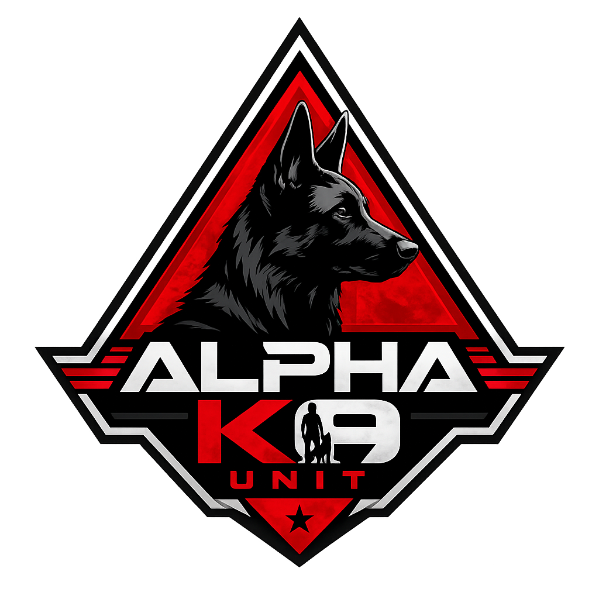
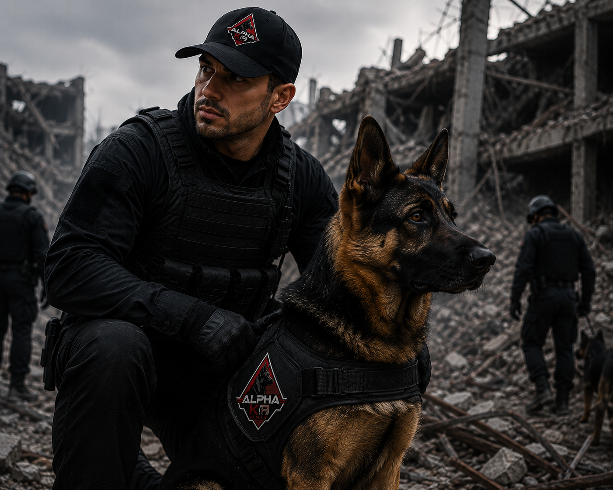
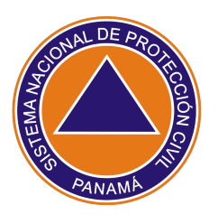
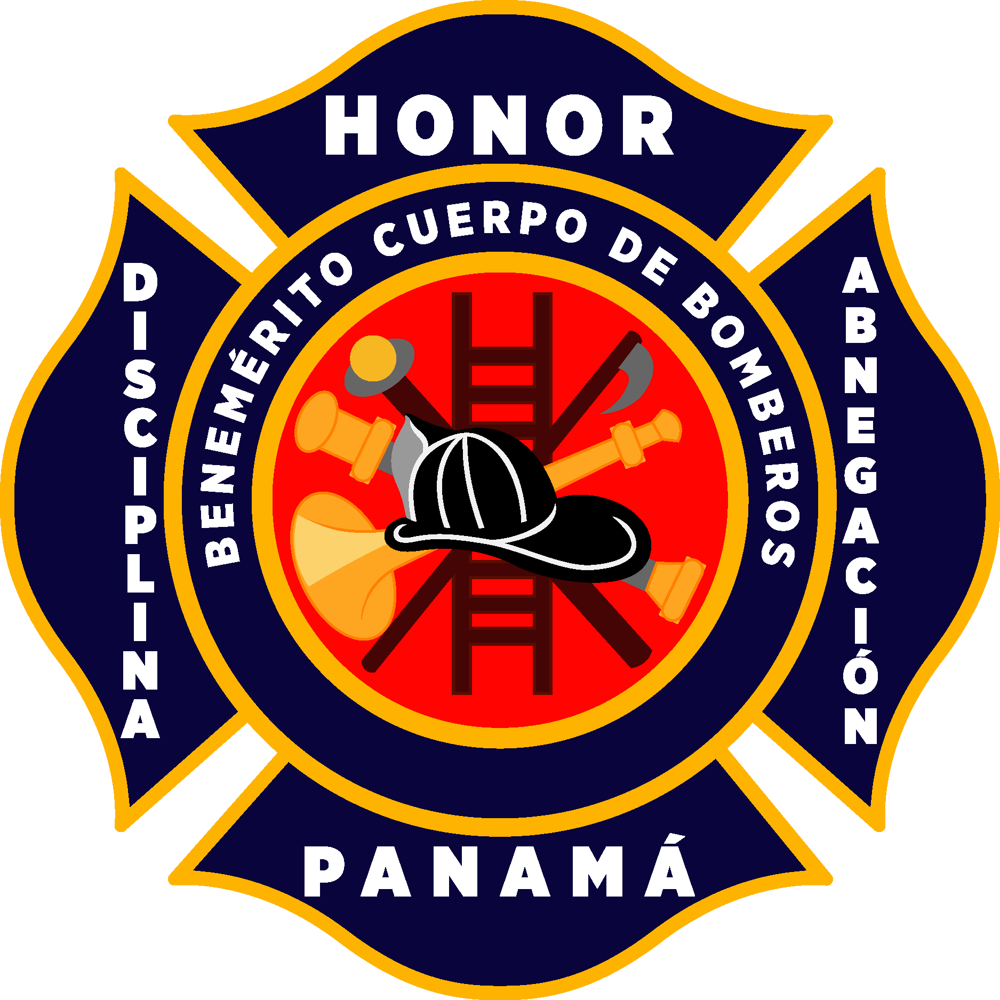

GEMA
GLOBAL EMERGENCY
MANAGEMENT ACCESS

ALPHA K9 UNIT
Ángeles con Huellas de Esperanza
Misión
Fortalecer la preparación de binomios caninos mediante entrenamientos, capacitaciones y voluntariados comprometidos con la cooperación internacional, brindando esperanza y apoyo ante emergencias, desastres y labores de seguridad.
Visión
Ser una comunidad internacional líder en la formación y conexión de binomios caninos, reconocida por inspirar confianza, cooperación y servicio bajo nuestro lema "Ángeles con Huellas de Esperanza".
Nuestra Historia

ALPHA K9 UNIT nació como una iniciativa enfocada en fortalecer la preparación y cooperación entre binomios caninos especializados en búsqueda, rescate y apoyo en situaciones de emergencia.
La organización reúne guías, entrenadores y voluntarios comprometidos con el desarrollo de perros de trabajo altamente capacitados para responder ante desastres, rescates urbanos, estructuras colapsadas y otras operaciones especiales.
Gracias al extraordinario sentido del olfato de los perros, estos equipos pueden localizar personas desaparecidas, colaborar con organismos de rescate y brindar apoyo en diferentes escenarios de emergencia.
Más que una organización, ALPHA K9 UNIT busca crear una red internacional de cooperación donde instituciones, profesionales y voluntarios compartan conocimientos, experiencias y entrenamientos para salvar vidas.
¿Qué ofrecemos?
Entrenamientos Especializados
Programas orientados al desarrollo de habilidades en obediencia, búsqueda, rescate y fortalecimiento del vínculo entre guía y perro.
Más informaciónCapacitaciones
Cursos, talleres y seminarios para mejorar los conocimientos sobre manejo canino, primeros auxilios veterinarios y búsqueda.
Más informaciónRed Internacional
Espacio donde organizaciones y binomios pueden compartir experiencias, crear alianzas y participar en actividades colaborativas.
Más informaciónVoluntariado
Oportunidades para participar en jornadas comunitarias, simulacros y campañas educativas relacionadas con la gestión del riesgo.
Más informaciónInstituciones de referencia

Cruz Roja Panamá
Unidad K-SAR
Unidad especializada en búsqueda y rescate con perros, comprometida con salvar vidas durante emergencias y desastres.
Visitar institución
SINAPROC Panamá
Unidad de Búsqueda y Rescate
Equipo especializado en búsqueda y rescate de personas en estructuras colapsadas y escenarios de emergencia.
Visitar institución
Bomberos de Panamá
Unidad Canina
Binomios entrenados para búsqueda de personas y apoyo operativo en incendios, rescates y desastres.
Visitar institución
GLOBAL
USAR Panamá
Grupo especializado en búsqueda y rescate urbano (USAR), conformado por personal altamente capacitado para responder ante desastres nacionales e internacionales.
Visitar instituciónSAR GLOBAL
IRO – International Rescue Dog Organisation
Organización internacional que reúne unidades caninas de búsqueda y rescate, promoviendo la cooperación, capacitación y certificación de equipos K9 en todo el mundo.
Visitar institución